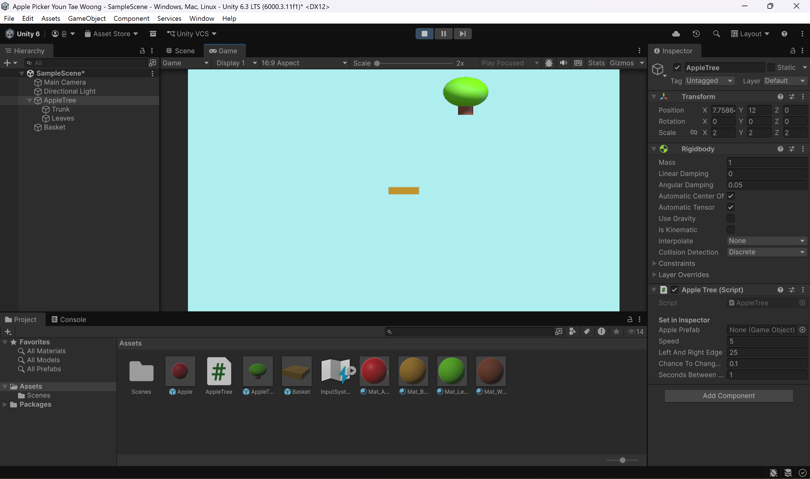
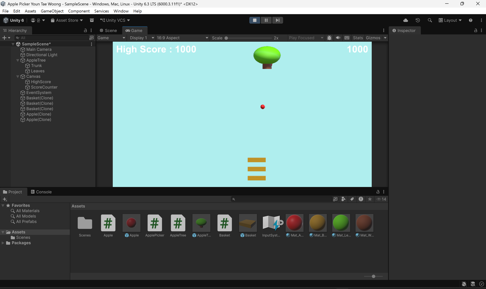
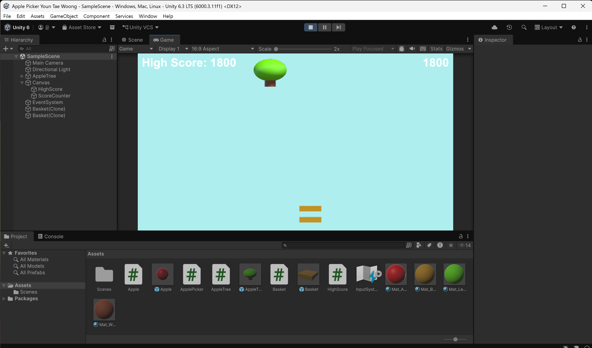

Apple Picker
Unity로 제작한 클래식 아케이드 사과 받기 게임
한양대학교 ERICA 스마트융합공학부 스마트ICT융합전공
2학년 1학기 C#게임프로그래밍 수업 과제
2학년 1학기 C#게임프로그래밍 수업 과제
Unity 6000.3
C#
uGUI
개인 프로젝트
About Project
본 프로젝트는 Unity로 제작한 클래식 아케이드 스타일의 사과 받기 게임입니다. 화면 상단에서 좌우로 움직이는 사과나무가 떨어뜨리는 사과를 마우스로 조작하는 바구니로 받아 점수를 획득합니다. 사과를 놓칠 때마다 바구니가 하나씩 사라지며, 모든 바구니를 잃으면 게임이 재시작됩니다. PlayerPrefs를 활용한 최고 점수 저장 기능으로 게임 세션 간 기록이 유지됩니다.
게임 방법
- 사과나무가 화면 상단에서 좌우로 움직이며 일정 주기로 사과를 떨어뜨립니다.
- 마우스를 좌우로 움직여 3개의 바구니로 사과를 받습니다.
- 사과 하나를 받을 때마다 100점을 획득합니다.
- 사과를 놓치면 떨어지던 모든 사과가 사라지고 바구니가 하나 제거됩니다.
- 바구니를 모두 잃으면 게임이 처음부터 다시 시작됩니다.
Progress
수업 진행에 따른 주차별 제출 화면입니다.

6주차 — 사과나무 · 바구니 기본 구성

8주차 — 점수 · 최고 점수 UI, 바구니 3개

9주차 — 미스 시 바구니 제거 · 게임 오버 로직
Implementation
주요 스크립트 구성입니다.
| 스크립트 | 설명 |
|---|---|
AppleTree.cs | 사과나무의 좌우 이동, 확률 기반 방향 전환, Invoke를 활용한 주기적 사과 생성 |
Apple.cs | 사과 낙하 및 화면 이탈 시 제거 처리 |
Basket.cs | ScreenToWorldPoint 기반 마우스 추적 이동, 충돌 판정 및 점수 획득 |
ApplePicker.cs | 게임 매니저 — 바구니 생성/제거, 게임 오버 및 씬 재시작 관리 |
HighScore.cs | PlayerPrefs를 활용한 최고 점수 영구 저장 및 UI 표시 |
Tech Stack
개발 환경
- Engine · Unity 6 (6000.3.11f1)
- 언어 · C#
- IDE · Visual Studio
핵심 기술
- GameObject 관리 · Prefab Instantiate/Destroy, Tag 기반 객체 검색
- Input · ScreenToWorldPoint 마우스 좌표 변환
- 충돌 처리 · OnCollisionEnter 기반 사과-바구니 충돌 판정
- 데이터 저장 · PlayerPrefs 최고 점수 영속화
- UI · uGUI Text 기반 실시간 점수 표시
- 씬 관리 · SceneManager를 활용한 게임 재시작